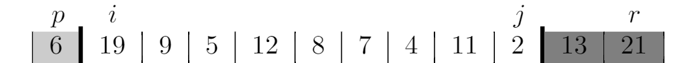
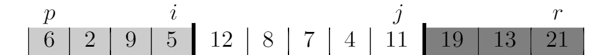
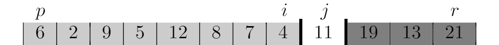

Problems
7-1
a










b
We repeat j = j - 1 from r + 1 and repeat i = i + 1 from p - 1, so i moves from left to right and j moves from right to left, the while loop terminates when i >= j, thus, it will not access an element of A outside the subarray A[p..r]. But will it keep increasing i such that i is bigger than r? No, it's not possible, because we choose A[p] as pivot. So in the first iteration, i stops at p, and if i < j, we exchange A[i] with A[j], so the pivot is exchanged to right, thus it makes sure it stops keep increasing i when it meets the pivot in right.
c
Suppose the array is in increasing order, so it keeps increasing j until j = p because A[p] <= x. So j could be p. In the while loop, j will be r first, because there are at least two elements in the array, it will keep increasing j or exchange A[i] with A[j], if it increase j, we get j < r, if we exchange A[i] with A[j], then it also increase j in the next iteration, either makes j > r. So p <= j < r.
d
j stopes decreasing when A[j] <= x and i stops increasing when A[i] >= x, after exchanging A[i] with A[j], it makes sure every element of A[p..i] is less than or equal to every element of A[j..r]. When it terminates, we have j - i <= 1, so every element of A[p..j] is less than or equal to every element of A[j + 1..r].
e
QUICKSORT(A, p, r)
if p < r
q = HOARE-PARTITION(A, p, r)
QUICKSORT(A, p, q)
QUICKSORT(A, q + 1, r)
HOARE-PARTITION(A, p, r)
x = A[p]
i = p - 1
j = r + 1
while True
repeat
j = j - 1
until A[j] <= x
repeat
i = i + 1
until A[i] >= x
if i < j
exchange A[i] with A[j]
else return j
7-2
a
If all elements values are equal, then randomize the array won't make a difference. In exercise 7.2-2 we know the running time is $\Theta(n^2)$.
b
PARTITION'(A, p, r)
x = A[r]
i = p - 1
t = p - 1
for j = p to r - 1
if A[j] < x
t = t + 1
i = i + 1
exchange A[t] with A[i]
if t != j:
exchange A[j] with A[i]
else if A[j] == x
t = t + 1
exchange A[t] with A[j]
exchange A[t + 1] with A[r]
return i + 1, t + 1
The running time is obviously $\Theta(r - p)$.
c
RANDOMIZED-QUICKSORT'(A, p, r)
if p < r
q, t = RANDOMIZED-PARTITION'(A, p r)
RANDOMIZED-QUICKSORT'(A, p, q - 1)
RANDOMIZED-QUICKSORT'(A, t + 1, r)
RANDOMIZED-PARTITION'(A, p, r)
i = RANDOM(p, r)
exchange A[r] with A[i]
return PARTITION'(A, p, r)
QUICKSORT'(A, p, r)
if p < r
q, t = RANDOMIZED-PARTITION'(A, p r)
QUICKSORT'(A, p, q - 1)
QUICKSORT'(A, t + 1, r)
d
If we use QUICKSORT', then the worst-case becomes a best-case. If all elements of the array are the same, then the PARTITION' on the whole array splits the problem size to [p, p - 1] and [r + 1, r], then the subproblem terminates. The running time is $\Theta(n)$.
So we can avoid the assumption that all elements are distinct, because if an array with size n contains duplicate elements, the running time is less than the running time of the array with distinct elements.
7-3
a
We choose the last element as pivot, but we randomize the array before that. It has the probability $\frac{1}{n}$ that an element will be put to the last position in array. So any particular element is chosen as the pivot is $\frac{1}{n}$. And $E[X_i] = \frac{1}{n}$.
b
First let's check the expected running time when element i is chosen as pivot. The PARTITION method takes $\Theta(n)$, and the problem size is splited to [p, i - 1] and [i + 1, r], the running time of the two subproblems are $T(i - 1 - p + 1) = T(i - p)$ and $T(r - (i + 1) + 1) = T(r - i)$. Thus the running time is $E[X_i(T(i - p) + T(r - i) + \Theta(n))]$, where p = 1, r = n.
Thus $E[T(n)] = E[\sum_{q = 1}^n X_q(T(q - 1) + T(n - q) + \Theta(n))]$.
c
$$ \begin{eqnarray} E[T(n)] &=& E[\sum_{q = 1}^n X_q(T(q - 1) + T(n - q) + \Theta(n))] \\ &=& E[\sum_{q = 1}^n \frac{1}{n}(T(q - 1) + T(n - q) + \Theta(n))] \\ &=& \frac{1}{n}E[T(0) + T(n - 1) + \Theta(n) + T(1) + T(n - 2) + \Theta(n) + \ldots + T(n - 1) + T(0) + \Theta(n)] \\ &=& \frac{1}{n}E[(T(0) + T(1) + \ldots + T(n - 1)) + (T(n - 1) + T(n - 2) + \ldots + T(0)) + n\Theta(n)] \\ &=& \frac{1}{n}E[2\sum_{q = 0}^{n - 1}T(q) + n\Theta(n)] \\ &=& \frac{2}{n}E[\sum_{q = 0}^{n - 1}T(q)] + \Theta(n) \\ &=& \frac{2}{n}\sum_{q = 0}^{n - 1}E[T(q)] + \Theta(n) \\ &=& \frac{2}{n}\sum_{q = 2}^{n - 1}E[T(q)] + \frac{2}{n}(E[T(0)] + E[T(1)]) + \Theta(n) \\ &=& \frac{2}{n}\sum_{q = 2}^{n - 1}E[T(q)] + \Theta(n) \end{eqnarray} $$
d
$$ \begin{eqnarray} \sum_{k = 2}^{n - 1} k\lg{k} &=& \sum_{k = 2}^{\lceil \frac{n}{2} \rceil - 1} k\lg{k} + \sum_{k = \lceil \frac{n}{2} \rceil}^{n - 1} k\lg{k} \\ &<& \sum_{k = 2}^{\frac{n}{2} + 1 - 1} k\lg{k} + \sum_{k = \frac{n}{2}}^{n - 1} k\lg{k} \\ &=& \sum_{k = 2}^{\frac{n}{2}} k\lg{k} + \sum_{k = \frac{n}{2}}^{n - 1} k\lg{k} \\ &\leq& \sum_{k = 2}^{\frac{n}{2}} k\lg{\frac{n}{2}} + \sum_{k = \frac{n}{2}}^{n - 1} k\lg{n} \\ &=& (\lg{n} - 1)\frac{(2 + \frac{n}{2})(\frac{n}{2} - 2 + 1)}{2} + \lg{n}\frac{(\frac{n}{2} + n - 1)(n - 1 - \frac{n}{2} + 1)}{2} \\ &=& (\lg{n} - 1)(\frac{n^2}{8} + \frac{n}{4} - 1) + \lg{n}(\frac{3n^2}{8} - \frac{n}{4}) \\ &=& \frac{1}{2}n^2\lg{n} - \frac{1}{8}n^2 -\lg{n} - \frac{n}{4} + 1 \\ &<=& \frac{1}{2}n^2\lg{n} - \frac{1}{8}n^2 - \lg3 - \frac{3}{4} + 1 \\ &<& \frac{1}{2}n^2\lg{n} - \frac{1}{8}n^2 \end{eqnarray} $$
e
We stary by assuming that $E[T(n)] \leq an\lg{n}$ for all positive m < n, yielding $E[T(q)] \leq aq\lg{q}$. Substituting into the equation:
$$ \begin{eqnarray} E[T(n)]&=& \frac{2}{n}\sum_{q = 2}^{n - 1}E[T(q)] + \Theta(n) \\ &\leq& \frac{2}{n}\sum_{q = 2}^{n - 1} aq\lg{q} + \Theta(n) \\ &=& \frac{2a}{n}\sum_{q = 2}^{n - 1} q\lg{q} + \Theta(n) \\ &\leq& \frac{2a}{n}(\frac{1}{2}n^2\lg{n} - \frac{1}{8}n^2) + \Theta(n) \\ &=& an\lg{n} - \frac{a}{4}n + \Theta(n) \\ &\leq& an\lg{n} - \frac{a}{4}n + cn \\ &=& an\lg{n} - (\frac{a}{4} - c)n \\ &\leq& an\lg{n} \end{eqnarray} $$
where the last step holds as long as $\frac{a}{4} \geq c$.
Thus $E[T(n)] = \Theta(n\lg{n})$.
7-4
a
The PARTITION method splits the array into two parts, then it sorts the left part first. At last it assigns the right part start index as the new value of p, so in the next iteration, it starts to sort the right part. Thus the whole array is sorted.
b
For example, when all elements in the array are same. The PARTITION method returns n, so the size of subproblems are n - 1 and 0, and it continues to call TAIL-RECURSIVE-QUICKSORT with size n - 1, but each recursive call only reduces the problem size by 1, thus the stack depth becomes $\Theta(n)$.
c
After we split the array into two parts, we call TAIL-RECURSIVE-QUICKSORT on the smaller part. The max size of smaller part is $\frac{n}{2}$, thus the max stack depth is $\Theta(\lg{n})$.
TAIL-RECURSIVE-QUICKSORT(A, p, r)
while p < r
// Partition and sort left subarray.
q = PARTITION(A, p, r)
if q - p > r - q
TAIL-RECURSIVE-QUICKSORT(A, q + 1, r)
r = q - 1
else
TAIL-RECURSIVE-QUICKSORT(A, p, q - 1)
p = q + 1
7-5
a
If an element at index i is chosen as median, we need to pick one element in A[1..i - 1] and one element in A[i + 1..n], and the picking order is not unique, so there are $A_3^{3}$ permutations. Thus the probability is $p_i = \frac{(i - 1)(n - i)A_3^{3}}{A_n{3}} = \frac{6(i - 1)(n - i)}{n(n - 1)(n - 2)}$.
b
The $p_i$ of oridinary implementation is $\frac{1}{n}$. So:
$$ \begin{eqnarray} \frac{p_{\lfloor \frac{n + 1}{2} \rfloor}\frac{6(i - 1)(n - i)}{n(n - 1)(n - 2)}}{\frac{1}{n}} &=& \frac{\lim_{n \to \infty}\frac{6(\lfloor \frac{n + 1}{2} \rfloor - 1)(n - \lfloor \frac{n + 1}{2} \rfloor)}{n(n - 1)(n - 2)}}{\frac{1}{n}} \\ &=& \lim_{n \to \infty}\frac{6(\frac{n + 1}{2} - 1)(n - \frac{n + 1}{2})}{(n - 1)(n - 2)} \\ &=& \lim_{n \to \infty}\frac{6(\frac{n - 1}{2})^2}{(n - 1)(n - 2)} \\ &=& \frac{3}{2} \end{eqnarray} $$
c
The likehood of getting a good split of the ordinary implementation is:
$$ \begin{eqnarray} \lim_{n \to \infty} \sum_{\frac{n}{3}}^{\frac{2n}{3}} \frac{1}{n} &=& \lim_{n \to \infty} \int_{\frac{n}{3}}^{\frac{2n}{3}} \frac{1}{n} di \quad (\int \frac{1}{n} di = \frac{i}{n}) \\ &=& \lim_{n \to \infty} \frac{\frac{2n}{3}}{n} - \frac{\frac{n}{3}}{n} \\ &=& \lim_{n \to \infty} (\frac{2}{3} - \frac{1}{3}) \\ &=& \frac{1}{3} \end{eqnarray} $$
The likehood of getting a good split of the new implementation is:
$$ \begin{eqnarray} \lim_{n \to \infty} \sum_{\frac{n}{3}}^{\frac{2n}{3}} \frac{6(i - 1)(n - i)}{n(n - 1)(n - 2)} &=& \lim_{n \to \infty} \int_{\frac{n}{3}}^{\frac{2n}{3}} \frac{6(i - 1)(n - i)}{n(n - 1)(n - 2)} di \\ &=& \lim_{n \to \infty} \frac{6}{n(n - 1)(n - 2)} \int_{\frac{n}{3}}^{\frac{2n}{3}} (i - 1)(n - i) di \quad (\int (i - 1)(n - i) di = -\frac{1}{3}i^3 + \frac{n + 1}{2}i^2 - ni) \\ &=& \lim_{n \to \infty} \frac{6}{n(n - 1)(n - 2)} (-\frac{1}{3}(\frac{2n}{3})^3 + \frac{n + 1}{2}(\frac{2n}{3})^2 - n\frac{2n}{3} - (-\frac{1}{3}(\frac{n}{3})^3 + \frac{n + 1}{2}(\frac{n}{3})^2 - n\frac{n}{3})) \\ &=& \lim_{n \to \infty} \frac{6}{n(n - 1)(n - 2)}(-\frac{7}{81}n^3 + \frac{1}{6}n^3 - \frac{1}{6}n^2) \\ &=& 6(-\frac{7}{81} + \frac{1}{6}) \\ &=& \frac{13}{27} \end{eqnarray} $$
And the amount of improvement is $\frac{\frac{13}{27}}{\frac{1}{3}} = \frac{13}{9}$.
d
The best-case of quicksort happens when the middle element is chosen as the pivot. And the running time is $\Omega(n\lg{n})$. Event the median-of-3 method picks the middle element as the pivot each time, the running time is still $\Omega(n\lg{n})$, thus it affects only the constant factor.
7-6
a
The idea is similar like problem 7-2. Given an interval as pivot, we treat the intervals which overlap with the pivot are "equal element values". The PARTITION method returns two indices q and t, where $p \leq q \leq t \leq r$, such that:
- all intervals of
A[q..t]overlap withA[t], - the right ending of each interval of
A[p..q - 1]is less than the left ending ofA[t], - the left ending of each interval of
A[t + 1..r]is greater than the right ending ofA[t].
FUZZY-SORTING-OF-INTERVALS(A, p, r)
if p < r
q, t = RANDOMIZED-PARTITION(A, p r)
FUZZY-SORTING-OF-INTERVALS(A, p, q - 1)
FUZZY-SORTING-OF-INTERVALS(A, t + 1, r)
RANDOMIZED-PARTITION(A, p, r)
i = RANDOM(p, r)
exchange A[r] with A[i]
return PARTITION(A, p, r)
PARTITION(A, p, r)
x = A[r]
i = p - 1
t = p - 1
for j = p to r - 1
if A[j] is before x
t = t + 1
i = i + 1
exchange A[t] with A[i]
if t != j:
exchange A[j] with A[i]
else if A[j] overlaps with x
t = t + 1
exchange A[t] with A[j]
exchange A[t + 1] with A[r]
return i + 1, t + 1
b
It's just a variation of problem 7-2, expected we use different comparision checks, so the expected running time is $\Theta(n\lg{n})$ in general.
When all of the intervals overlap, we treat them like all of the intervals are equal, thus like the analysis in problem 7-2, the expected running time is $\Theta(n)$.